地震の話
今村明恒
日本は
地震國であり、
又地震學の
開け
始めた
國である。これは
誤りのない
事實であるけれども、もし
日本は
世界中で
地震學が
最も
進んだ
國であるなどといふならば、それは
聊かうぬぼれの
感がある。
實際地震學の
或方面では、
日本の
研究が
最も
進んでゐる
點もあるけれども、
其他の
方面に
於ては
必ずしもさうでない。
其故著者等は
地震學を
以て
世界に
誇らうなどとは
思つてゐないのみならず、
此頃のように、わが
國民が
繰返し
地震に
征服せられてみると、
寧ろ
恥かしいような
氣持ちもする。
即ち
大正十二年の
關東大地震に
於ては
十萬の
生命と
五十五億圓の
財産とを
失ひ、
二年後但馬の
國のけちな
地震の
爲、
四百の
人命と
三千萬圓の
財産とを
損し、
又二年後の
丹後地震によつて
三千の
死者と
一億圓の
財産損失とを
生じた。そして
此等の
損失の
殆んど
全部は
地震後の
火災に
由るものであつて、
被害民の
努力次第によつては
大部分免れ
得られるべき
損失であつた。
然るに
事實はさうでなく、あのような
悲慘な
結果の
續發となつたのであるが、これを
遠く
海外から
眺めてみると、
日本は
恐ろしい
地震國である。
地震の
度毎に
大火災を
起す
國である。
外國人は
命懸けでないと
旅行の
出來ない
國である。
國民はあゝ
度々地震火災に
惱まされても
少しも
懲りないものゝようである。
地震に
因つて
命を
失ふことをなんとも
思つてゐないのかも
知れないなどといふ
結論を
下されないとも
限あるまい
［＃「限あるまい」はママ］。
實際これは
歐米人の
多數が
日本の
地震に
對する
觀念である。かく
觀察されてみる
時、
著者の
如き
斯學の
專攻者は
非常な
恥辱を
感ぜざるを
得ないのである。
勿論この
學問の
研究が
容易に
進歩しないのも
震災國たるの
一因には
相違ないが、
然しながら
地震に
對して
必要な
初歩の
知識がわが
國民に
缺けてゐることが、
震災擴大の
最大原因であらう。
實に
著者の
如きは、
地震學が
今日以上に
進歩しなくとも、
震災の
殆んど
全部はこれを
免れ
得る
手段があると
考へてゐるものゝ
一人である。
著者は
少年諸君に
向つて、
地震學の
進んだ
知識を
紹介しようとするものでない。
又たとひ
卑近な
部分でも、
震災防止の
目的に
直接關係のないものまで
論じようとするのでもない。
但し
震災防止につき、
少年諸君［＃ルビの「どくしや」はママ］が
現在の
小國民としても、
又他日國民人物の
中堅としても
自衞上、はた
公益上必要缺くべからざる
事項を
叙述せんとするものである。
［＃改ページ］
わが
國は
地震學發祥の
地といはれてゐる。これは
文化の
進んだ
國としては
地震に
見舞はれる
機會の
多いからにもよるのであるが、なほ
他の
一因として
明治維新後、わが
國の
文化開發事業の
補助者として
招聘した
歐米人が、
多くは
其道に
於て、
優秀な
人達であつたことも
數へなければならぬ。
事の
發端は、
明治十三年二月二十二日横濱並にその
近郊に
於て、
煉瓦煙突並に
土壁に
小破損を
生ぜしめた
地震にある。この
時大學其他の
官衙にゐた
内外達識の
士が
相會して、
二週間目には
日本地震學會を
組織し、つゞいて
毎月の
會合に
有益な
研究の
結果を
發表したが、
創立數箇月の
後、
當時東京帝國大學理學部に
於ける
機械工學及び
物理學の
教授であつたユーイング
博士（
現今エヂンバラ
大學總長）は
水平振子地震計の
發明を
公にし、ついで
翌年には
工學部大學校電氣學教授たりしグレー
博士の
考案を
改良した
上下動地震計を
作り
出した。これが
即ち
現今の
地震計の
基礎の
形式であつて、
當今行はれてゐるミルン
地震計、
大森地震計、ガリッチン
地震計、パシュウィチ
水平振子など、
其構造の
要點は
皆ユーイング
地震計である。
實にこの
地震計の
發明は、それまで
極めて
幼稚であつた
地震學が
本當の
學問に
進歩した
基であるので、
單に
此一點からみても、
地震學は
日本に
於て
開けたといつても
差支へないくらゐである。それのみならず
日本地震學會から
出版せられた
二十册の
報告書は、
當時世界に
於て
唯一の
地震學雜誌であつたのみならず、
收録せられた
材料、ミルン
教授等によつて
物せられたる
多くの
論文、いづれも
有益な
資料であつて、
今日でも
地震學について
何か
研究でも
試みんとするものゝ、
必ず
參考すべき
古典書である。
それやこれやの
關係で、
日本は
地震學開發の
國といはれてゐるのであるが、
然し
其開發者の
重な
人々［＃ルビの「じんこう」はママ］は
外國人、
特にイギリス
人であつた。
關谷教授、
大森博士などの
加はれたのはずつと
後のことである。
明治二十四年十月二十八日の
濃尾大地震は、
地震學にとつて
第二の
時代を
作つたものである。
此頃に
於て
日本地震學界［＃「學界」はママ］は
解散の
止むなきに
至つたが、
新たにわが
政府事業として
起された
震災豫防調査會が
之に
代つた。
此調査會の
會員は
全部日本人であつて、
地震學、
物理學、
地質學、
地理學、
土木工學、
建築學、
機械工學等、
地震學の
理論並に
應用に
關した
學問に
於てわが
國第一流の
專門家を
網羅したものであつた。
隨つて
地震動の
性質、
地震に
損傷しない
土木工事や、
建築の
仕方等についての
研究が
非常に
進み、
木造竝に
西洋風の
家屋につき
耐震構造法など
殆んど
完全の
域に
進んだ。
調査會が
大正十三年廢止せられるに
至るまでに
發表した
報告書は
和文のもの
百一號、
歐文のもの
二十六號、
別に
歐文紀要十一册、
歐文觀測録六册は、
今日世界が
有する
地震學參考書の
中堅をなすものであつて、これ
等の
事業は、
日本地震學會時代に
於て
專有してゐたわが
國の
名聲を
辱かしめなかつたといへるであらう。
日本に
於ける
地震學のこれまでの
發達は
主に
人命財産に
關する
方面の
研究であつた。
然るに
最近二十年の
間、
歐米に
於ける
地震學は
他の
方面に
發達した。それは
遠方地震の
觀測によつて、わが
地球の
内部の
構造を
推究する
仕方である。
少年讀者は、
天文學、
地理學、
地質學、
物理學等の
應用によつて、わが
地球の
球體に
近きこと、
平均密度が五・五なること、
表面に
近き
部分の
構造、
内部に
蓄へられる
高熱、
地球が
一箇の
大きな
磁石であることなどを
學ばれたであらう。
又此等の
學問の
力によつて、わが
地球は
鋼鐵よりも
大きな
剛性を
有してゐることも
分つて
來た。
即ち
月や
太陽の
引力によつてわが
地球が
受けるひづみの
分量は、
地球全體が
鋼鐵で
出來てゐると
假定した
場合の
三分の
二しかないのである。
言葉をかへていへば
地球の
平均のしぶとさは
鋼鐵の
一倍半である。かういふ
風にしてわが
地球の
知識はだん／＼
進んで
來たけれども、
其内部の
成立ちに
立入つた
知識は
毛頭進んでゐないといつて
宜しかつた。
實際地質學で
研究してゐる
地層の
深さは
地表下二三里内に
横たはつてゐるもの
許りであつて、
醫學上の
皮膚科にも
及ばないものである。
但し
茲に
一つの
研究の
手懸りが
出來たといふのは、
地球の
表面近くから
放つた
斥候が、
地球内部にまで
偵察に
出掛けそれが
再び
地球の
表面に
現れて
來て
報告をなしつゝあることが
氣附かれたことである。
此斥候は
何者であるかといふと、
大地震のときに
起る
地震波である。
實際地震は、
地球の
表面に
近い
所に
發生するものであるが、ちようど
風が
水面に
波を
起すように、
又發音體が
空氣中に
音波を
起すように、
地震は
地震波を
起すのである。さうして
地震が
大きければ
大きい
程地震波［＃ルビの「ぢくんぱ」はママ］も
大きいので、これが
地球の
表面を
沿うて
四方八方に
擴がり、
或は
地球を
一廻りも
二廻りもすることもあるが、それと
同時に
地震波は
地球内部の
方向にも
進行して
反對の
方面に
現れ、
場合によつては
地球の
表面で
反射して
再び
他の
方面に
向うのもある。
但し
此斥候の
報告書とも
名づくべきものは、
單に
地震波の
種々の
形式のみであるから、これを
書取り
其上にそれを
讀み
取ることを
必要とする。これは
容易ならぬ
爲事であるが、しかしながら
單に
困難であるだけであつて
決して
不可能ではない。
地震波の
偵察した
結果を
書き
取る
器械、これを
地震計と
名づける。
前にユーイング
教授が
地震計を
發明したことを
述べたが、これは
實に
容易ならざる
發明であつたのである。
讀者試みに
地震計の
原理を
想像してみるがよい。
地上の
萬物は
地震のとき
皆搖れ
出すのに、
自分だけ
空間の
元の
點から
動かないといふような
方法を
工夫しなければなるまい。これは
決してさう
安々と
考へ
出せるはずのものではないのであるが、
更に
其精巧なものに
至つては、
人の
身體には
勿論、
普通の
地震計にも
感じない
程の
地震波まで
記録することが
出來るのである。
特に
其中、ゆつくりとした
震動、
例へば
一分間に
一糎程を
靜かに
往復振動するような
場合に
於ても、これを
實際のまゝに
書取らしめることが
長週期地震計と
名づけるものゝ
特色である。かういふ
地震計で
遠方の
大地震を
觀測すると、その
記録した
模樣が
極めて
規則正しいものとなつて
現［＃ルビの「あらは」は底本では「はらは」］れて
來て、
今日では
模樣の
一つ／＼について
其經路が
既に
明かにせられてゐる。これによつて
地球の
内部を
通るときの
地震波の
速さは、
地球を
鋼鐵とした
場合の
幾倍にも
當ることが
分り、
又地球の
内部は
鐵の
心から
成［＃ルビの「か」はママ］り
立つてをり、その
大きさは
半徑二千七百粁の
球であることが
推定せられて
來た。
地震學の
今日の
進歩によつて、
地球の
内部状態が
分りかけて
來たことは
右の
通りであるが、
實際地震學を
除外しては、
此地球内部状態の
研究資料となるところのものが
全く
氣づかれてゐないのである。さればこそ
歐米の
地震學者の
多くは
此方面の
研究に
興味を
持ち、また
主力を
傾けてゐるのである。
實際地震の
全く
起ることなき
國に
於ては、
生命財産に
關係ある
方面の
研究は
無意味であるけれども、
適當な
器械さへあれば、
世界の
遠隔した
場所に
起つた
地震の
餘波を
觀測して、
前記の
如き
研究が
結構出來るのである。
前に
述べた
通り
地震學の
研究は、
便宜上これを
二つの
方面に
分けることが
出來る。
即ち
一つは
人命財産に
直接關係ある
事項、
他は
地球の
内部状態の
推究に
關係ある
事項である。わが
國に
於ける
地震學は
無論第一の
方面には
著しい
發達を
遂げ、
決して
他に
後れを
取つたことがないのみならず、
今後に
於てもやはり
其先頭に
立つて
進行することが
出來るであらうと
信じてゐる。
然るに
第二の
方面に
於ては、
歐洲特にドイツ
邊に
優秀な
學者が
多く
現れ、
近年わが
國は
此點について
彼に
一歩を
讓つてゐたかの
感があつたが、
大正十二年關東大地震以來、
研究者次第に
増加し
優秀な
若い
學者も
出來て
來たので、
最近二三年の
間に
於ては
此方面にも
手が
次第に
伸びて
來て、
今日では
最早彼に
後れてゐようとは
思はれない。
地震學の
應用によつて
地球の
内部状態が
可なりに
明かるくなつて
來たことは
前にも
述べた
通りであるが、
本篇に
於ては
此方面に
向つて、
前記以上に
深入りしようとは
思はない。
但し
地震の
起り
樣、
即ち
地震はいかなる
場所に
於てどんな
作用で
起るかの
大體の
觀念を
得るため、
地球の
表面に
近き
部分の
構造を
述べさして
貰ひたい。
わが
地球には
水界と
陸界との
區別があり、
陸界は
東大陸、
西大陸、
濠洲等に
分れてゐる。
此陸界と
水界中に
於て
特に
深い
海の
部分とは、
土地の
構造、
特に
其地震學上から
見た
性質に
於て
可なりな
相違がある。
大陸は
主として
花崗岩質のもので
出來てゐて、
大體十里程度の
深さを
持つてゐるようである。それは
下の
鐵心に
至るまでは
玄武岩質のものもしくはそれに
鐵分が
加はつたもので
出來てゐて、これは
急速に
働く
力に
對して
極めてしぶとく
抵抗する
性質を
備へてゐるけれども、
緩く
働く
力に
對しては
容易に
形を
變へ、
力の
働くまゝになること、
食用の
飴を
思ひ
出させるようなものである。さうして
深い
海の
底はこの
質の
層が
直接其表面まで
達してゐるか、
或は
表面近く
進んで
來てゐて、
其上を
陸界の
性質のもので
薄く
被ふてゐるくらゐにすぎぬと、かう
考へられてゐる。
地球はさういふ
性質の
薄皮を
以て
被はれてをり、
深海床又は
地下深い
所は、
緩く
働く
力に
對してしぶとく
抵抗しないので、
地震を
起さうといふ
力は
大陸又は
其周圍に
於ては
次第に
蓄積することを
許されても、
深い
海底特に
地球の
内部に
於ては、たとひかような
力が
働くことがあつても、
風に
柳の
譬の
通り、すぐにその
力のなすまゝに
形を
調節して
平均が
成り
立つため、
地震力が
蓄へられることを
許されない。そこで
大きな
地震は、
大陸又は
其周圍に
於て、
十里以内の
深さの
所に
起ることが
通常であつて、
深い
海の
中央部、
又は
數十里或は
數百里の
深さの
地下では
起らない。たとひそこに
地震が
起ることがあつても、それは
大きくないものに
限るのである。
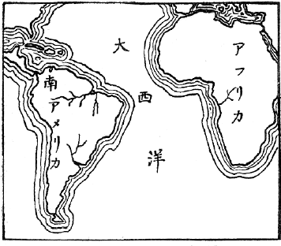
アフリカ海岸と南米東岸との符号
大陸は
現今のように
五大洲に
分れてゐるけれども、
地球が
融けてゐた
状態から、
固まり
始めたときには、
單に
一つの
塊であつたが、それが
或作用のために
數箇の
地塊に
分裂し、
地球の
自轉其他の
作用で、
次第に
離れ
離れになつて
今日のようになつたものと
信じられてゐる。
讀者もし
世界地圖を
開かれたなら、アフリカの
西沿岸の
大きな
凹みが、
大西洋を
隔てた
對岸の
南アメリカ、
特にブラジルの
沿岸のでつぱりに
丁度割符を
合せたようにつぎ
合はされることを
氣附かれるであらう。このような
海岸線の
組合せは
地球上至る
所に
見出されるが、
紅海の
東海岸と
西海岸との
如きも
著しい
一組である。もし
手近かな
例が
欲しければ、
小規模ではあるけれども、
浦賀海峽の
左右兩岸を
擧げることが
出來る。これを
熟視されると、
兩對岸が
相接觸してゐた
模樣が
想像せられるであらうが、さう
接續してゐたと
考へてのみ
説明し
得られる
地理學上の
事項が、
又其中に
含まれてゐるのである。
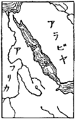
紅海兩海岸の符号
大陸は、
譬へば
飴の
海に
浮んでゐる
船である。これが
浮動を
妨げゐるのは
深海床から
伸ばされた
章魚の
手である。そしてこの
章魚は
大陸の
船縁を
掴んでゐるのである。
或極限まではかくして
大陸の
浮動を
支へてゐるけれども、
遂に
支へ
切れなくて
或は
手を
離したり
或は
指を
切つたりして
平均が
破れ、
隨つて
急激な
移動も
起るのである。
此急激な
移動、これが
即ち
大地震の
原因である。もしかような
大移動が
海底で
起れば
津浪を
起すことにもなる。
火山作用によつて
地震を
起すことは、
別に
説明を
要するまでもないことである。
又其作用によつても
地震が
起されることがないでもないが、いづれの
場合に
於ても、
大地震とは
縁遠いものゝみである。
隨つて
人命財産の
損失から
見るとき、これ
等の
問題は
考へに
入れなくとも
差支へないであらう。
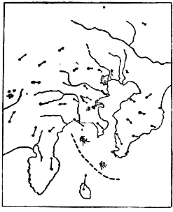
關東大地震の震原と地盤の移動
この
際一言して
置く
必要のあることは
地震の
副原因といふことである。
即ち
地震が
起るだけの
準備が
出來てゐる
時、それを
活動に
轉ぜしめる
機會を
與へるところの
誘因である。
例へば
鐵砲の
彈丸を
遠方へ
飛ばす
原因は
火藥の
爆發力であるが、これを
實現せしめる
副原因は
引金を
外す
作用である。
鐵砲に
彈藥が
裝填してあれば
引金を
外すことによつて
彈丸が
遠方に
飛ぶが、もし
彈藥が
裝填してなく
或は
單に
彈丸だけ
詰めて
火藥を
加へなかつたなら、たとひ
幾度引金を
外しても
彈丸は
決して
飛び
出さない。
地震の
場合に
於て
此引金の
働きに
相當するものとして、
氣壓、
潮の
干滿などいろ／＼ある。
例へば
相模平野に
起る
地震に
於ては、
其地方の
北西方に
於て
氣壓が
高く、
南東方に
於てそれが
低いと
其地方の
地震が
誘發され
易い。
其故地震の
豫知問題の
研究に
於て
右のような
副原因を
研究することも
大切であるが、
然しながら
事實上の
問題として
引金の
空外しともいふべき
場合が
頗る
多いことである。つまり
百千の
空外しに
對して
僅に
一回の
實彈が
飛び
出すくらゐの
事であるから、かような
副原因だけを
研究してゐては、
豫知問題の
方へ
一歩も
進出することが
出來ないような
關係になるのである。
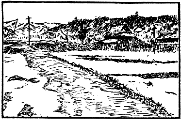
丹後地震に伴へる郷村断層
豫知問題の
研究について
最も
大切な
目標は、
地震の
主原因の
調査である。
彈藥が
完全に
裝填されてあるか、
否かを
調べることである。
近時此方面の
研究がわが
日本に
於て
大いに
進んで
來た。
著者は
昭和二年九月チェッコスロバキア
國の
首府プラーグに
於ける
地震學科の
國際會議に
於て、
此問題に
關するわが
國最近の
研究結果につき
報告するところがあつたが、
列席の
各員は
著者が
簡單に
演述した
大地震前徴につき
更に
詳細な
説明を
求められ、
頗る
滿足の
態に
見受けた。
實際地震の
豫知問題の
解決は
至難の
業であるに
相違ない。
然しながら
決して
不可能のものとは
思はない。
著者の
如きは、
此問題は
既にある
程度までは
机上に
於て
解決せられてゐると
思つてゐる。
殘るところは
其考案の
實施如何といふ
點に
歸着する。
而も
其實施は
一時に
數十萬圓、
年々十萬圓の
費用にて
出來る
程度である。
地震の
豫知問題が
假に
都合よく
解決されたとしても、
震災防止については
猶重大な
問題が
多分に
殘るであらう。
假に
地震豫報が
天氣豫報の
程度に
達しても、
雨天に
於ては
雨着や
傘を
要するように、
又暴風に
對しては
海上の
警戒は
勿論、
農作物、
家屋等に
對しても
臨機の
處置が
入用であらう。
其上、
氣象上の
大きな
異變については
單に
豫報ばかりで
解決されないこと、
昭和二年九月十三日、
西九州に
於ける
風水害の
慘状を
見ても
明らかであらう。
著者の
想像では、
假に
地震豫報が
出來る
日が
來ても、それは
地震の
起りそうな
或特別の
地方を
指摘し
得るのみで、それが
幾時間後か
將た
幾日後に
實現するかを
知るのは
更に
研究が
進まねば
解決出來ないことゝ
考へる。
要するに
地震學進歩の
現状に
於ては、
何時地震に
襲はれても
差支へないように
平常の
心懸けが
必要である。
建物や
土木工事を
耐震的にするといふようなことは、これ
亦平日行ふべきことではあるが、しかしこれは
其局に
當るものゝ
注意すべき
事項であつて、
小國民が
與らずともよい
事である。
然しながら
地震に
出會つた
其瞬間に
於ては、
大小國民殘らず
自分［＃ルビの「じしん」はママ］で
適當な
處置を
取らなければならないから、
此場合の
心懸けは
地震國の
國民に
取つて
一人殘らず
必要なことである。
わが
國の
如き
地震國に
於ては、
地震に
出會つたときの
適當な
心得が
絶對に
必要なるにも
拘［＃ルビの「かゝ」はママ］らず、
從來かようなものが
缺けてゐた。たとひ
多少それに
注意したものがあつても、
地震の
眞相を
誤解してゐるため、
適當なものになつてゐなかつた。
著者はこれに
氣附いたので、
此數年間其編纂に
腐心してゐたが、
東京帝國大學地震學教室に
於ける
同人の
助言によつて、
大正十五年に
至つて
漸く
之を
公にする
程度に
達した。
本篇は
主にこの
注意書に
對する
解釋を
誌したものといつてよいと
思ふ。もし
此心得を
體得せられたならば、
個人としては
震災から
生ずる
危難を
免れ、
社會上の
一人としては
地震後の
火災を
未然に
防止し、
從來われ／＼が
惱んだ
震災の
大部分が
避けられることゝ
思ふ。
少くもそのような
結果になるように
期待してゐるものである。
つぎに
著者が
編纂した
注意書を
掲げることにする。
一、
最初の
一瞬間に
於て
非常の
地震なるか
否かを
判斷し、
機宜に
適する
目論見を
立てること、
但しこれには
多少の
地震知識を
要す。
二、
非常の
地震たるを
覺るものは
自ら
屋外に
避難せんと
力めるであらう。
數秒間に
廣場へ
出られる
見込みがあらば
機敏に
飛び
出すがよい。
但し
火の
元用心を
忘れざること。
三、
二階建、
三階建等の
木造家屋では、
階上の
方却つて
危險が
少い、
高層建物の
上層に
居合せた
場合には
屋外へ
避難することを
斷念しなければなるまい。
四、
屋内の
一時避難所としては
堅牢な
家屋の
傍がよい。
教場内に
於ては
机の
下が
最も
安全である。
木造家屋内にては
桁、
梁の
下を
避けること、
又洋風建物内にては、
張壁、
煖爐用煉瓦、
煙突等の
落ちて
來さうな
所を
避け、
止むを
得ざれば
出入口の
枠構への
直下に
身を
寄せること。
五、
屋外に
於ては
屋根瓦、
壁の
墜落［＃ルビの「ついらい」はママ］、
或は
石垣、
煉瓦塀、
煙突等の
倒潰し
來る
虞ある
區域から
遠ざかること。
特に
石燈籠［＃ルビの「いしどうろう」は底本では「いしどうろ」］に
近寄らざること。
六、
海岸に
於ては
津浪襲來の
常習地を
警戒し、
山間に
於ては
崖崩れ、
山津浪に
關する
注意を
怠らざること。
七、
大地震に
當り
凡そ
最初の
一分間を
凌ぎ
得たら、
最早危險を
脱したものと
見做し
得られる。
餘震恐れるに
足らず、
地割れに
吸ひ
込まれる
事はわが
國にては
絶對になし。
老若男女、
總て
力のあらん
限り
災害防止に
力むべきである。
火災の
防止を
眞先にし、
人命救助をそのつぎとすること。これ
即ち
人命財産の
損失を
最小にする
手段である。
八、
潰家からの
發火は
地震直後に
起ることもあり、
一二時間の
後に
起ることもある。
油斷なきことを
要する。
九、
大地震の
場合には
水道は
斷水するものと
覺悟し、
機敏に
貯水の
用意をなすこと。
又水を
用ひざる
消防法をも
應用すべきこと。
十、
餘震は
其最大なるものも
最初の
大地震の
十分の
一以下の
勢力である。
最初の
大地震を
凌ぎ
得た
木造家屋は、たとひ
多少の
破損をなしても、
餘震に
對しては
安全であらう。
但し
地震でなくとも
壞れそうな
程度に
損したものは
例外である。
右の
中、
説明を
略してもよいものがある。
然しながら、
一應［＃ルビの「いさおう」はママ］はざつとした
註釋を
加はへることにする。
以下項を
追うて
進んで
行く。
地震に
出會つた
一瞬間、
心の
落着を
失つて
狼狽もすれば、
徒らに
逃げ
惑ふ
一方のみに
走るものもある。
平日の
心得の
足りない
人にこれが
多い。
著者の
編んだ
第一項は、
最初の
一瞬間に
於て、それが
非常の
地震なるか
否かを
判斷せよといふのである。もし
大した
地震でないといふ
見込がついたならば、
心も
自然に
安らかなはずであるから
過失の
起りようもない。
其上危險性を
帶びた
大地震に
出會ふといふのは、
人の
一生の
間に
於て
多くて
一二回にしかないはずであるから、われ／＼が
出會ふ
所の
地震の
殆んど
全部は
大したものでないといふことがいへる。
但し
其一生の
間に
一二回しか
出會はないはずのものに、
偶出會つた
場合が
最も
大切であるから、さういふ
性質の
地震であるか
否かを
最初の
一瞬間に
於て
判定することは、
地震に
出會つたときの
心得として
最も
大切な
一事件である。
地震は
地表下に
於て
餘り
深くない
所で
起るものである。
但し
深くないといつても、それは
地球の
大きさに
比較していふことであつて、これを
絶對にいふならば
幾里・
幾十粁といふ
程度のものである。もし
震原が
直下でなかつたならば、
震原に
對して
水平の
方向にも
距離が
加はつて
來るから、
距離は
益遠くなるわけである。
われ／＼は
地震を
感じた
場合、
其振動の
緩急によつて
震原距離の
概念を
有つようになる。
即ち
振動緩なるときは
震原が
遠いことを
想像するが、
反對に
振動が
急なときは
震原はわれわれに
近いことゝ
判斷する。
又地震と
同時に、
或はこれを
感ずる
前に
地鳴りを
聞くこともある。これは
地震がわれ／＼に
最も
近く
起つた
場合である。
地震は
其根源の
場所に
於ては
緩急各種の
地震波を
發生するものであつて、これが
相伴つて
四方八方へ
擴がつて
行くのであるが、
此際急な
振動をなす
波動は
途すがら
其勢力を
最も
速かに
減殺されるから、
振動の
急なもの
程其擴がる
範圍が
狹く、
緩かなもの
程それが
廣い。
此事をつぎのようにもいふ。
即ち
急な
振動は、
其勢力が
中間の
媒介物に
吸收され
易く、
緩かなものはそれが
吸收され
惡い。これがわれ／＼の
感じた
地震動の
緩急によつて、
地震が
深くに
起つたか
或は
近くに
起つたかを
判斷し
得る
理由であつて、
又遠方の
大地震の
觀測に
長週期地震計が
入用なわけである。
地震が
十分に
近く
起つた
場合は、
一秒間に
數十回若しくばそれ
以上の
往復振動が
現れて
來るが、それは
單に
地鳴りとしてわれ／＼の
聽覺に
感ずるのみであつて、
一秒間に
四五回の
往復振動になつて
漸く
急激な
地動としてわれ／＼の
身體にはつきりと
感ずるようになる。
然しながら
震原距離が
三十里以上にもなると、
初動は
可なり
緩漫になつて
一秒間一二回の
往復振動になり、
更に
距離が
遠くなると
終には
地震動の
最初の
部分は
感じなくなつて、
中頃の
強い
部分だけを
感ずるようにもなる。
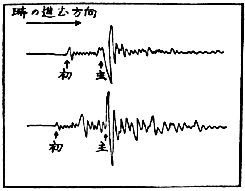
初期微動と主要動との區別
つぎに、
最初の
一瞬間の
感覺によつて
地震の
大小強弱を
判斷する
事について
述べて
見たい。
諺に
大風は
中頃が
弱くて
初めと
終りとが
強く、
大雪は
初めから
中頃まで
弱くて
終りが
強く、
大地震は、
初めと
終りが
弱くて
中頃が
強いといふことがある。これは
面白い
比較觀察だと
思ふ。
大風と
大雪とはさて
置いて、
大地震についていはれた
右の
諺は
一般の
地震に
通ずるものである。われ／＼は
最初の
弱い
部分を
初期微動と
名づけ、
中頃の
強い
部分を
主要動或は
主要部、
終りの
弱い
部分を
終期部と
名づけてゐる。
終期部は
地震動の
餘波であつて
餘り
大切なものではないが、
初期微動と
主要部とは
極めて
大切なものである。
兩者ともに
震原から
同時に
出發し、
同じ
途を
通つて
來るのであるけれども、
初期微動は
速度大に、
主要動はそれが
小なるために
斯く
前後に
到着することになるのである。
恰も
電光と
雷鳴との
關係のようなものである。
もつと
具體的にいふならば、
初期微動は
空氣中に
於ける
音波のような
波動であつて、
振動の
方向と
進行の
方向とが
相一致するもの、
即ち
形式からいへば
縱波である。
主要動はそれと
異なり
横波である。
震原の
近い
場合には
縱波は
凡そ
毎秒五粁の
速さで
進行するのに、
横波は
毎秒三・二
粁の
速さで
進行する。
初期微動が
到着してから
主要動が
來るまでの
時間を、
初期微動繼續時間と
名づける。
讀者は
初期微動時間だけを
知つて
震原距離を
計算して
出すことは、
算術のたやすい
問題たることを
氣附かれたであらう。
實際われ／＼はこの
計算［＃ルビの「けいさん」は底本では「けいさい」］に
一つの
公式を
用ひてゐる。
即ち
初期微動繼續時間の
秒數に
八といふ
係數を
掛けると、
震原距離の
凡その
値が
粁で
出て
來るのである。
地震計の
觀測によるときは、
初動の
方向も
觀測せられるので、
隨つて
震原の
方向が
推定せられ、
又初期微動繼續時間によつて
震原距離が
計算せられるから、
單に
一箇所の
觀測のみによつて
震原の
位置が
推定せられるのであるが、しかしながら
身體の
感覺のみにてはかような
結果を
得ることは
困難である。
東京邊で
起る
普通の
小地震は、
大抵四十粁位の
深さをもつてゐるから、かような
地震がわれ／＼の
直下に
起つても、
初期微動繼續時間は五・三
秒程になる。
東京市内に
住むものは、
七八秒から
十秒位までの
初期微動を
有する
地震を
感ずることが
最も
多數である。
然しながら
大正十四年の
但馬地震に
於ける
田結村の
場合の
如く、
又一昨年の
丹後地震に
於ける
郷村又は
峰山の
場合の
如く、
初期微動繼續時間僅に
三秒程度なることもあるのである。
但しこれは
極めて
稀有な
場合であつたといつてよろしい。
初期微動は
主要動に
比較して
大なる
速さを
持つてゐるが、
然しながら
振動の
大いさは、
反對に
主要動の
方が
却つて
大である。この
大小の
差違は
地震の
性質により、
又關係地方の
地形地質等によつても
一樣ではないが、
多數の
場合を
平均していふならば、
主要動たる
横波は、
初期微動たる
縱波に
比較して
凡そ
十倍の
大いさを
持つてゐる。これが
最初の
部分に
初期微動とて
微の
字が
冠せられる
所以である。さうして
主要動が
大地震の
場合に
於て、
破壞作用をなす
部分たることは
説明せずとも
既に
了得せられたことであらう。
讀者は
小地震の
場合に
於て、
初期微動と
主要動を
明確に
區別して
感得せられたことがあるであらう。
初期微動は
通常びり／＼といふ
言葉で
形容せられるように、
稍急にしかも
微小な
振動であるが、それが
數秒間或は
十數秒間繼續すると、
突然主要動たる
大きな
振動が
來る。
其振動ぶりは、
最初の
縱波に
比べて
稍緩漫な
大搖れであるがため、われ／＼はこれをゆさ／＼といふ
言葉で
形容してゐる。
然しながら
大地震になると、
初期微動でも
決して
微動でなく、
多くの
人にとつては
幾分の
脅威を
感ずるような
大いさの
振動である。
例へばわれ／＼が
大地震の
場合に
於て
屡經驗する
通り
主要動の
大いさを
十糎と
假定すれば、
初期微動は
一糎程度のものであるので、もしかういふ
大いさの
地動が、
一秒間に
二三回も
繰返されるほどの
急激なものであつたならば、
木造家屋や
土藏の
土壁を
落し、
器物を
棚の
上から
轉落せしめる
位のことはあり
得べきである。もし
地震の
初動がこの
程度の
強さを
示したならば、これは
非常の
地震であると
判斷して
誤りはないであらう。
幸に
最初の
一瞬間に
於て、
非常の
地震なるか
否かの
判斷がついたならば、
其判斷の
結果によつて
臨機の
處置をなすべきである。もしそれが
非常の
地震だと
判斷されたならば、
自分の
居所の
如何によつて
處置方法が
變られなければなるまい。それについては、
以下の
各項に
於て
細説するつもりである。
然しながら、それがありふれた
小地震だと
判斷されたならば、
泰然自若としてゐるのも
一法であらうけれども、これは
餘りに
消極的の
動作であつて、
著者が
地震國の
小國民に
向つて
希望する
所でない。
著者は
寧ろかような
場合を
利用して、
地震に
對する
實驗的［＃ルビの「じつけんてき」は底本では「じんけんてき」］の
知識を
得、
修養を
積まれるよう
希望するものである。
前に
述べた
通り、
初期微動の
繼續時間は
震原距離の
計算に
利用し
得られる。この
繼續時間の
正確なる
値は
地震計の
觀測によつて
始めて
分ることであるけれども、
概略の
値は
暗算によつても
出て
來る。
著者の
如きはそれが
常習となつてゐるので、
夜間熟睡してゐるときでも
地震により
容易に
覺醒し、
夢うつゝの
境涯にありながら
右の
時間の
暗算等にとりかかる
癖がある。これを
器械的觀測の
結果に
比較すると
一割以上の
誤差を
生じた
例は
極めて
少い。
著者は
更に
進んで
地震動の
性質を
味はひ、それによつて
震原の
位置をも
判斷することに
利用してゐるけれども、これは
一般の
讀者に
望み
得べきことでない。とに
角、
初期微動繼續時間を
始めとして、
發震時其他に
關する
値を
計測し、これを
器械觀測の
結果に
比較する
事は
頗る
興味多いことである。
自分と
觀測所との
間隔が
一二里以内であるならば、
兩方の
時刻竝に
時間共に
大體同じ
値に
出て
來るべきはずである。
右の
外、
體驗した
地震動の
大いさを
器械觀測の
結果に
比較するのも
亦興味ある
事柄である。
然しながらこの
結果に
於ては
器械で
觀測せられたものと、
自分の
體驗したものとは
著しき
相違のあることが
一般であつて、それが
寧ろ
至當である
場合が
多い。
例へば
東京市内でも
下町と
山の
手とで
震動の
大いさに
非常な
相違がある。
概して
下町の
方が
大きく、
山の
手の
二三倍若しくはそれ
以上にもなることがある。
又鎌倉の
例を
取ると
由比ヶ濱の
砂丘は、
雪の
下の
岩盤に
比較して
四五倍の
大いさに
出て
來ることもある。かような
根本の
相違がある
上に、
器械は
大抵地面其物の
震動を
觀測する
樣になつてゐるのに、
體驗を
以て
測つてゐるのは
家屋の
振動であることが
多い、もし
其家屋が
丈夫な
木造平家であるならば、
床上の
振動は
地面のものゝ
三割増しなることが
普通であるけれども、
木造二階建の
階上は
三倍程度なることが
通常である。この
通りに
器械觀測の
結果と
體驗の
結果とは
最初から
一致し
難いものであるけれども、それを
比較してみることは
無益の
業ではない。
上手にやると
自分の
家屋の
耐震率とも
名づくべきものゝ
概念が
得られるであらう。
即ち
二階建の
二階座敷は
階下座敷の
五倍に
搖れるようならば、
不安定な
構造と
判斷しなければならないが、もし
僅々二倍位にしか
搖れないならば、
寧ろ
堅牢な
建物と
見做してよいであらう。
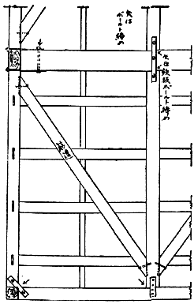
耐震的構造
地震に
出會つてそれが
非常の
地震であることを
意識したものは、
餘程修養を
積んだ
人でない
限り、たとひ
耐震家屋内にゐても、
又屋外避難の
不利益な
場合でも、しかせんと
力めるであらう。この
屋外へ
避難することの
不利益な
場合は
次項に
説明することゝし、もし
平家建の
家屋内或は
二階建、
三階建等の
階下に
居合せた
場合には
屋外へ
飛び
出す
方が
最も
安全であることがある。
然しながらいづれの
場合でもさうであるとは
限らぬ。
先づ
屋外が
狹くて、もし
家屋が
倒潰したならば
却つて
其ために
壓伏されるような
危險はなきか。これが
第一に
考慮すべき
點である。
平家建の
小屋組、
即ち
桁や
梁と
屋根との
部分が
普通に
出來てゐれば
容易に
崩れるものではない。たとひ
家屋が
倒伏することがあつても、
小屋組だけは
元のまゝの
形をして
地上に
直接の
屋根を
現すことは、
大地震の
場合普通に
見る
現象である。かような
場合、
下敷になつたものも、
梁又は
桁のような
大きな
横木で
打たれない
限り
大抵安全である。
一方屋外に
避難せんとする
場合に
於ては、まだ
出きらない
内に
家屋倒潰し、
而も
入口の
大きな
横木に
壓伏せられる
危險が
伴ふことがある。
前に
述べた
通り、
初期微動の
繼續時間は
概して
七八秒はあるけれども、
前記の
但馬地震及び
丹後地震に
於ては、
震原地の
直上に
於て
三秒位しかなかつた。かゝる
場合、
家の
倒伏前に
屋外の
安全な
場所迄逃げ
出すことは
中々容易な
業ではない。
實際前記の
大地震に
於ては
機敏な
動作をなして
却つて
軒前で
壓死したものが
多く、
逃げ
後れながら
小屋組の
下に
安全に
敷かれたものは
屋根を
破つて
助かつたといふ。かような
場合を
省みると、
屋外へ
避難して
可なる
場合は、
僅に
二三秒で
軒下を
離れることが
出來るような
位置にあるときに
限るようである。もし
偶然かような
位置に
居合せたならば、
機敏に
飛出すが
最上策であること
勿論である。
右のような
條件が
完全に
備はつてゐなくとも、
大抵の
人は
屋外に
避難せんとあせるに
違ひない。これは
寧ろ
動物の
本能であらう。
目の
前を
何か
掠めて
通るとき
急に
瞼を
閉ぢるような
行動と
相似てゐる。
安政二年十月二日の
江戸大地震に
於て、
小石川の
水戸屋敷に
於て
壓死した
藤田東湖先生の
最後と、
麹町神田橋内の
姫路藩邸に
於て
壓死した
石本李蹊翁の
最後は
全く
同じ
轍を
踏まれたものであつた。
此地震の
初期微動繼續時間は
七八秒程あつたように
思はれる。
各先生共に
地震を
感得せられるや
否や、
本能的に
外に
飛び
出されたが、はつと
氣が
付いてみると
老母が
屋内に
取り
殘されてあつた。とつて
返して
助け
出さうとする
中、
主要動のために
家屋は
崩壞し
始めたので、
東湖は
突差に
母堂を
屋外へ
抛り
出した
瞬間、
家屋は
全く
先生を
壓伏してしまつたが、
李蹊は
母堂と
運命を
共にしたのである。
東湖先生の
最後のありさまはよく
人に
知られてゐるが、
石本李蹊翁のは
知る
人が
少い。
翁の
令息に
有名な
石本新六男があり、
新六男の
四男に
地震學で
有名な
巳四雄教授のあることは、
李蹊翁も
又以て
瞑するに
足るといはれてもよいであらう。
われ／＼の
崇敬する
偉人でも、
大地震となると
我を
忘れて
飛び
出されるのであるから、
二階建、
三階建等の
階下や
平家建の
屋内にゐた
人が
逃げ
出すのは、
尤もな
動作と
考へなければなるまい。
前記の
但馬地震や
丹後地震の
如きは
初期微動繼續時間の
最も
短かつた
稀有の
例であるので、
寧ろ
例外とみて
然るべきものである。それ
故に
若し
數秒間で
廣場へ
出［＃ルビの「だ」はママ］られる
見込みがあらば、
最も
機敏にさうする
方が
個人として
最上［＃ルビの「さいじよう」は底本では「さいしよう」］の
策たるに
相違ない。
唯一つ
茲に
考慮すべきは
火の
用心に
關する
問題である。
地震に
伴ふ
火災は
地震直後に
起るのが
通常であるけれども、
地震後一二時間の
後に
起ることもある。
避難の
際、
僅に
一擧手の
動作によつて
火が
消されるようならば、さういふ
處置は
望ましきことであるが、もし
其餘裕なくして
飛出したならば、
後になつてからでも
火を
消［＃ルビの「けす」は底本では「け」］ことに
注意すべきであつて、
特に
今迄ゐた
家が
潰れたときにさうである。これ
著者がこの
項の
［＃「この項の」はママ］本文に
於て、『
但し
火の
元用心を
忘れざること』と
附け
加へた
所以である。
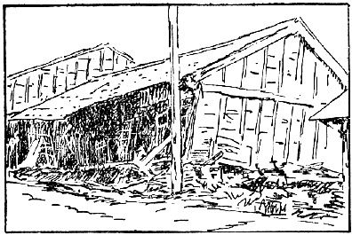
二階建の潰れ方（豐岡）
わが
國に
於ける
三階建は
勿論、
二階建も
大抵各階の
柱が
床の
部分に
於て
繼がれてある。
即ち
通し
柱を
用ひないで
大神樂造りにしてある。かういふ
構造に
於ては、
大きな
地震動に
對して
眞先に
傷むのは
最下層である。
更に
震動が
強いと
階下の
部分が
潰れ、
上層の
多くは
直立の
位置の
儘に
取殘される。
即ち
二階建は
平家造りのように
三階建は
二階建のようなものになる。
大正十四年の
但馬地震に
於て、
豐岡町の
被害状況の
概報に、
停車場の
前通り
四五町の
間は
町家が
將棊倒しに
潰れたとあつたが、
震災地を
始めて
見學した
一學生は
其實状［＃ルビの「じつきよう」はママ］を
見て、
右の
概報は
誤りだと
思つた。さうして
著者に
向つていふには、
將棊倒しどころか
各家屋直立してゐるではありませんかと。
著者はこのとき
彼に
反問して、
君はこの
町家を
平家建と
思つてゐるかといつてみたが、
該學生が
潰れ
方の
眞相を
了解したのは、
其状況を
暫時熟視した
後のことであつた。
大地震の
場合に
於て、
二階建或は
三階建等の
最下層が
最も
危險であることは、
更に
詳説を
要しない
程によく
知られてゐる。それ
故に
二階或は
三階に
居合せた
人が、
階下を
通ることの
危險を
侵してまで
屋外に
逃げ
出さうとする
不見識な
行動は
排斥すべきである。
寧ろ
更に
上層に
上るか、
或は
屋上の
物干場に
避難することを
勸めるのであるが、
實際かういふ
賢明な
處置を
取られた
例は
屡耳にするところである。
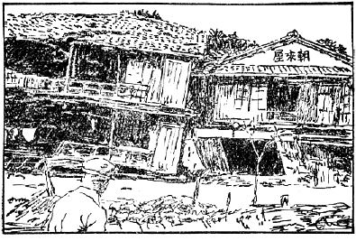
三階建の潰れ方（城崎）
著者は
明治二十七年六月二十日の
東京地震を
本郷湯島に
於て、
木造二階建の
階上で
經驗したことがある。
此時帝國大學地震學教室に
於ける
地動は
二寸七分の
大いさに
觀測せられたから、
同じ
臺地の
湯島に
於ても
大差なかつたはずと
思ふ。
隨つて
階上の
動搖は
六七寸にも
達したであらう。
當時著者は
大學に
於ける
卒業試驗の
準備中でつて
［＃「でつて」はママ］、
机に
向つて
靜座してゐたが、
地震の
初期微動に
於て
既に
土壁が
龜裂しきれ／″＼になつて
落ちて
來るので、
自ら
室の
中央部まで
動いたけれども、それ
以上に
歩行することは
困難であつて、たとひ
階下へ
行かうなどといふ
間違つた
考へを
起しても、それは
實行不可能であつた。
大正十二年九月一日の
關東大地震に
於て、
著者のよく
知つてゐる
某貴族は、
夫妻揃つて
潰家の
下敷となられた。
當時二人とも
木造家屋の
二階にをられたので、
下敷になりながら
小屋組の
空所に
挾まり、
無難に
救ひ
出されたが、
階下にゐた
家扶は
主人夫婦の
身の
上を
案じながら
辛うじて、
梯子段を
登りつめたとき
家は
潰れてしまつた。もしこの
家扶が
下座敷にゐたまゝであつたならば
無論壓死したであらうが、
主人思ひの
徳行のために
主人夫妻［＃ルビの「ふうふ」はママ］と
共に
無難に
救ひ
出されたのであつた。
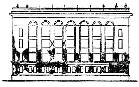
東京會館の破壞
近頃わが
國にはアメリカ
風の
高層建築物が
段々増加しつゝある。
地震に
對して
其安全さを
危ぶんでゐる
識者も
多い
事であるが、これは
其局に
當るものゝ
平日注意すべきことであつて、
小國民の
關與すべき
事でもあるまい。
然しながら
其ような
高い
殿堂に
近寄ることや
堂上に
昇ることは
年齡に
無關係なことであるから、わが
讀者も
偶かような
場所に
居合せたとき
大地震に
出會ふようなことがないとも
限らぬ。かういふ
種類の
建物は
設計施工によつて
地震に
傷められる
模樣が
變るけれども、
多くの
場合、
地上階は
比較的丈夫に
出來てゐるため
被害が
少い、この
點は
木造の
場合に
比較して
反對な
結果を
示すのである。もし
階數が
七つ
八つ、
高さが
百尺程度のものならば、
二階三階或は
四階建に
傷みが
最も
著しいようである。
大正十一年四月二十六日の
浦賀海峽地震に
傷められた
丸の
内びるぢんぐ、
大正十二年の
關東大地震によつて
腰を
折られた
東京會館などがその
適例であらう。いまかような
高層建物の
上層に
居合せた
場合、もし
地震に
出會つて
屋外に
避難せんと
試みたなら、それは
恐らくは
地震がすんでしまつた
頃に
到達せられる
位のことであらう。それ
故にかような
場合に
於ては、
屋外へ
出ることを
斷念し
屋内に
於て
比較的安全な
場所を
求めることが
寧ろ
得策であらう。
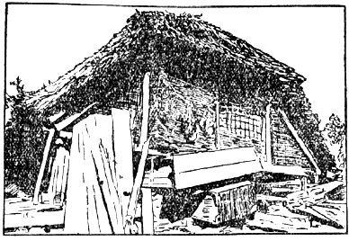
屋根を支へる家具
大地震に
出會つて
屋外への
安全な
避難が
間に
合はない
場合は、
家屋の
潰れること、
壁の
墜落、
煙突の
崩壞などを
覺悟し、
又木造家屋ならば
下敷になつた
場合を
考慮して、
崩壞又は
墜落物の
打撃から
免れ
得るような
場所に
一時避難するがよい。
普通の
住宅ならば
椅子、
衣類で
充滿した
箪笥、
火鉢、
碁盤、
將棊盤など、
總て
堅牢な
家具ならば
身を
寄せるに
適してゐる。これ
等の
適例は
大地震の
度毎にいくらも
見出される。
教場内に
於ては
机の
下が
最も
安全であるべきことは
説明を
要しないであらう。
下敷になつた
場合に
於て、
致命傷を
與へるものは
梁と
桁とである。それさへ
避けることが
出來たなら
大抵安全であるといつてよい。さうして
學校の
教場内に
竝列した
多數の
机や
或は
銃器臺などは、
其連合の
力を
以て、
此桁や
梁、
又は
小屋組全部を
支へることは
容易である。
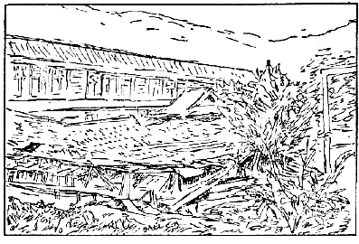
田根小學校の教室倒潰
圖は
明治四十二年八月十四日姉川大地震に
於て
倒潰の
憂き
目を
見た、
田根小學校の
教場である。
讀者は
墜落した
小屋組が、
其連合の
力を
以ていかに
完全に
支へられたかを
見られるであらう。この
地震の
時は、
丁度夏季休暇中であつたため、
一人の
生徒もゐなかつたのであるが、
假に
授業中であつたとして、もしそれに
善處せんとするならば、「
机の
下へしやがめ」の
號令一下で
十分であつたらう。さうして
家の
潰れ
方が
圖に
示された
通りであつたならば、
生徒中に
一人の
負傷者も
出來ず、「しやがんだまゝ
外へ
出よ」との
第二號令で、
全員秩序を
亂さず、
平日教場へ
出入するのと
餘り
違はない
態度で
校庭へ
現れ
出ることが
出來たであらう。
木造家屋に
對しては、
處置が
比較的に
容易であるが、
重い
洋風建築物であると、さう
簡單にはゆかぬ。
第一墜落物も
張壁、
煖爐用煙突など、いづれも
重量の
大なるものであるから、
机や
椅子では
支へることが
困難である。しかし
室は
比較的に
廣く
作られるのが
通常であるから、
右のようなものゝ
落ちて
來さうな
場所から
遠ざかることも
出來るであらう。
廣い
室ならば、
其中央部、もしくは
煙突の
立てる
反對の
側など、
稍それに
近い
條件であらう。
若し
室内にて
前記の
如き
條件の
場所もなく、
又は
廊下に
居合せて、
兩側の
張壁からの
墜落物に
挾み
撃ちせられさうな
場合に
於ては、
室の
出入口の
枠構へが、
夕立に
出會つたときの
樹陰位の
役を
勤めるであらう。
地震の
當初から
屋外にゐた
者も、
周圍の
状況によつては
必ずしも
安全であるとはいはれない。
又容易に
屋内から
逃げ
出すことが
出來ても、
立退き
先の
方が
却つて
屋内よりも
危險であるかも
知れない。
石垣、
煉瓦塀、
煙突などの
倒潰物は
致命傷を
與へる
事もあるからである。
又家屋に
接近してゐては、
屋根瓦、
壁の
崩壞物に
打たれることもあるであらう。
石燈籠は
餘り
強大ならざる
地震の
場合にも
倒れ
易く、さうして
近くにゐたものを
壓死せしめがちである。
特に
兒童が
顛倒した
石燈籠のために
生命［＃ルビの「せつめい」はママ］を
失つた
例は
頗る
多い。これは
兒童の
心理作用に
基づくものゝようであるから、
特に
父兄、
教師の
注意を
要する
事であらう。
元來神社、
寺院には
石燈籠が
多い。さうして
其處は
多く
兒童の
集る
所である。そこで
偶地震でも
起ると
兒童は
逃げ
惑ひ、そこらにある
立木或は
石燈籠にしがみつく。これは
恐らくかういふ
場合、
保護者の
膝にしがみつく
習慣から
斯く
導かれるものであらう。それ
故餘り
大きくない
地震、
例へば
漸く
器物を
顛倒し
土壁を
損し
粗造な
煉瓦煙突を
損傷するに
止まる
程度に
於ても、
石燈籠の
顛倒によつて
兒童の
壓死者を
出すことが
珍しくない。
此事は
教師父兄の
注意を
促すと
共にわが
小國民に、
向つても
直接に
戒めて
置きたいことである。
わが
國の
大地震は
激震區域の
廣いと
狹いとによつて、これを
非局部性のものと、
局部性のものとに
區別する
事が
出來る。
非局部性の
大地震は
多く
太平洋側の
海底に
起［＃ルビの「し」はママ］り、
地震の
規模廣大なると
陸地が
震原から
遠いために、はたまた
海底地震の
性質として
震動は
大搖れであるが、
然しながら
緩漫である。それと
同時に
津浪を
伴ふことが
其特色である。これに
反して
局部性の
大地震は
規模狹小であるが、
多く
陸地に
起るがために
震動の
性質が
急激である。
近く
其例をとるならば、
大正十二年の
關東大地震は
非局部性であつて、
大正十四年の
但馬地震及び
昭和二年の
丹後地震は
局部性であつた。
非局部性の
大地震を
起す
事のある
海洋底に
接した
海岸地方は、
大搖れの
地震に
見舞はれた
場合、
津浪についての
注意を
要する。
但し
津浪を
伴ふ
程の
地震は
最大級のものであるから、
倒潰家屋を
生ずる
區域［＃ルビの「くえき」はママ］が
數箇の
國や
縣に
亙ることもあり、
或は
震原距離［＃ルビの「りより」はママ］が
陸地から
餘り
遠いために、
單に
廣區域に
亙つて
大搖れのみを
感じ、
地震の
直接の
損害を
生じないこともある。
前者の
例は
大正十二年の
關東大地震、
或は
安政元年十一月四日及び
同五日の
東海道、
南海道大地震等であつて、
後者の
例としては
明治二十九年六月十五日の
三陸大津浪を
擧げることが
出來る。
かくしてわが
國の
大平洋側の
［＃「大平洋側の」はママ］沿岸は
非局部性の
大地震を
起す
海洋底に
接してゐるわけであるが、しかしながら
其海岸線の
全部が
津浪の
襲來に
暴露されてゐるわけではない。それについては
津浪襲來の
常習地といふものがある。この
常習地は
右に
記したような
地震に
見舞はれた
場合、
特別の
警戒を
要するけれども、
其他の
地方に
於ては
左程の
注意を
必要としないのである。
右の
話を
進めるについて
必要なのは
津浪の
概念である。
津浪に
海嘯なる
文字がよくあててあるがこれは
適當でない。
海嘯は
潮汐の
干滿の
差の
非常に
大きな
海に
向つて、
河口が
三角なりに
大きく
開いてゐる
所に
起る
現象である。
支那淅江省の
［＃「淅江省の」はママ］錢塘江は
海嘯について
最も
有名である。つまり
河流と
上汐とが
河口で
暫時戰つて、
遂に
上汐が
勝を
占め、
海水の
壁を
築きながらそれが
上流に
向つて
勢よく
進行するのである。
津浪とは
津の
浪、
即ち
港に
現れる
大津浪であつて、
暴風など
氣象上の
變調から
起ることもあるが、
最も
恐ろしいのは
地震津浪である。
元來浪といふから
讀者は
直に
風で
起される
波を
想像せられるかも
知れないが、
寧ろ
潮の
差引といふ
方が
實際に
近い。われ／＼が
通常みるところの
波は、
其山と
山との
間隔、
即ち
波長が
幾米、
或は
十幾米といふ
程度にすぎないが、
津浪の
波長は
幾粁、
幾十粁、
或は
幾百粁といふ
程度のものである。それ
故に
海上に
浮んでゐる
船舶には
其存在又は
進行が
分りかねる
場合が
多い。
但しそれが
海岸に
接近すると、
比較的に
急な
潮の
干滿となつて
現れて
來る。
即ち
普通の
潮汐は
一晝夜に
二回の
干滿をなすだけであつて、
隨つて
其週期は
凡そ
十二時間であるけれども、
津浪のために
生ずる
干滿は
幾分或は
幾十分の
週期を
以て
繰返されるのである。
かういふ
長波長の
津浪が
海底の
大地震によつていかにして
起されるかといふに、それは
多く
海底の
地形變動に
基づくのである。われ／＼は
近く
關東大地震に
於て、
相模灣の
海底が
廣さ
十里四方の
程度に
於て、
幾米の
上下變動のあつたことを
學んだ。さういふ
海底の
地形變動は
直に
海水面の
變動を
惹起すから、そこに
長波長の
津浪が
出來るわけである。
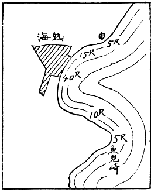
熱海における津浪の高さ
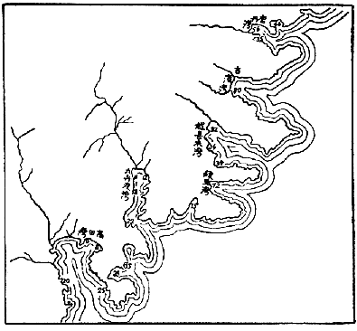
三陸大津浪高さの分布（數字は高さを尺にて表したもの）
かういふ
津浪は
沖合に
於ては
概して
數尺の
高さしか
持たないから、もしそれが
其まゝの
高さを
以て
海岸に
押寄せたならば、
大抵無難なるべきはずである。しかし、
波は
海深が
次第に
淺くなる
所に
進入すると、それにつれて
高さを
増し、
又漏斗のように
奧が
次第に
狹くなる
所に
進入しても
波の
高さが
増してくる。かういふ
關係が
重なるような
場所に
於ては、
津浪の
高さが
著しく
増大するわけであるが、それのみならず、
浪が
淺い
所に
來れば
遂に
破浪するに
至ること、
丁度普通の
小さな
波について
濱に
於て
經驗する
通りであるから、
此状態になつてからは、
浪といふよりも
寧ろ
流れといふべきである。
即ち
海水が
段々狹くなる
港灣に
流れ
込むことになり、
隨つて
沖合では
高さ
僅に
一二尺にすぎなかつた
津浪も、
港灣の
奧に
於ては
數十尺の
高さとなるのである。
大正十二年の
關東大地震に
於て
熱海港の
兩翼、
即ち
北は
衞戍病院分室のある
邊、
南は
魚見崎に
於ては
波の
高さ
四五尺しかなかつたが、
船着場では
十五尺、
港の
奧では
四十尺に
達して
多くの
家屋を
浚ひ
人命を
奪つた。
但し
港の
奧ではかような
大事變を
起してゐるに
拘らず
數十町の
沖合では
全くそれに
無關係であつて
當時そこを
航行中であつた
石油發動機船が
海岸に
於けるかゝる
慘事を
想像し
得なかつたのも
無理のないことである。
明治二十九年の
三陸大津浪は、
其原因數十里の
沖合に
於ける
海底の
地形變動にあつたのであるが、
津浪の
常習地たる
漏斗状［＃ルビの「じようごがた」はママ］の
港灣の
奧に
於ては
圖に
示された
通り、
或は
八十尺、
或は
七十五尺といふような
高さの
洪水となり、
合計二萬七千人の
人命を
奪つたのに、
港灣の
兩翼端では
僅に
數尺にすぎない
程のものであつたし、
其夜沖合に
漁獵に
行つてゐた
村人は、あんな
悲慘事が
自分の
村で
起つたことを
夢想することも
出來ず、
翌朝、
跡方もなく
失はれた
村へ
歸つて
茫然自失［＃ルビの「ぼうせん」はママ］したといふ。
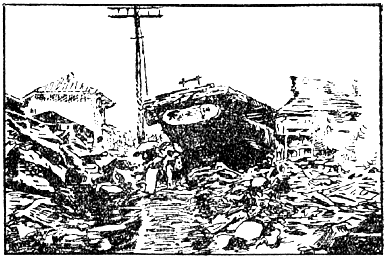
伊東の津浪
右の
通り、
津浪は
事實上に
於て
港の
波である。われ／＼は
學術的にもこの
名前を
用ひてゐる。
實に
津浪なる
語は、
最早國際語となつた
觀がある。
以上の
説明によつて、
津浪襲來の
常習地の
概念が
得られたことゝ
思ふ。
屡海底の
大地震を
起す
場所に
接し、そこに
向つて
大きく
漏斗形に
開いた
地形の
港灣がそれに
當るわけであるが、これに
次いで
多少の
注意を
拂ふべきは、
遠淺の
海岸である。たとひ
海岸線が
直線に
近くとも、
遠淺だけの
關係で、
波の
高さが
數倍の
程度に
増すこともあるから、もし
沖合に
於ける
高さが
數尺のものであつたならば、
前記の
如き
地形の
沿岸に
於て
多少の
被害を
見ることもある。
津浪に
傷められた
二階建、
三階建の
木造家屋は、
大地震に
傷められた
場合の
如く、
階下から
順番に
潰れて
行く。
又津浪に
浚はれた
場合に
於て、
其港灣の
奧に
接近した
所では
潮の
差引が
急であるから、
游泳も
思ふように
行かないけれども、
港灣の
兩翼端近くにてはかような
事がないから、
平常通りに
泳ぎ
得られる。この
前の
關東大地震に
際し、
熱海で
津浪に
浚はれたものゝ
中、
伊豆山の
方へ
向つて
泳いだものは
助かつたといふ。
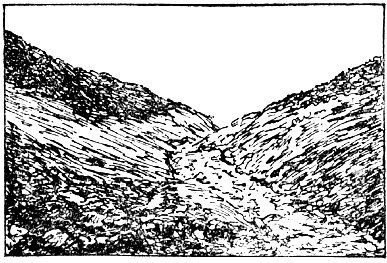
根府川の山津浪
地震の
場合に
崖下の
危險なことはいふまでもない。
横須賀停車場の
前に
立つたものは、
其處の
崖下に
石地藏の
建てるを
氣づくであらう。これは
關東大地震の
際、
其處に
生埋めにされた
五十二名の
不幸な
人の
冥福を
祈るために
建てられたものである。かような
危險は
直接の
崖下許りでなく、
崩壞せる
土砂が
流れ
下る
地域全部がさうなのである。
崩壞した
土砂の
分量が
大きくて、
百米立方、
即ち
百萬立方米の
程度にもなれば、
斜面を
沿うて
流れ
下るありさまは、
溪水が
奔流する
以上の
速さを
以て
馳せ
下るのである。
恰も
陸上に
於ける
洪水の
如き
觀を
呈するので
山津浪と
呼ばれるようになつたものであらう。
關東大地震の
場合に
於ては、
各所に
山津浪が
起つたが、
其中根府川の
一村を
浚つたものが
最も
有名であつた。この
山津浪の
源は
根府川の
溪流を
西に
溯ること
六粁、
海面からの
高さ
凡そ
五百米の
所にあつたが、
實際は
數箇所からの
崩壞物が
一緒に
集合したものらしく、
其分量は
百五十米立方と
推算せられた、これが
勾配九分の
一の
斜面に
沿ひ、
五分時間位の
間に
一里半程の
距離を
馳せ
下つたものらしい。さうして
根府川の
一村落は
崖上の
數戸を
殘して、
五百の
村民と
共に
其下に
埋沒されてしまつた。
此際鐵道橋梁も
下り
汽車と
共に
浚はれてしまつたが、これは
土砂に
埋つたまゝ
海底まで
持つて
行かれたものであることが
解つた。
其後山津浪が
殘した
土砂が
溪流のために
次第に
浚はれて、
再び
以前の
村落地を
暴露したけれども、
家屋は
其處から
現れて
來なかつたので、
山津浪が
一村を
埋沒したといふよりも、これを
浚つて
行つたといふ
方が
適當なことが
後日に
至つて
氣附かれた。
山津浪はかの
丹後地震の
場合にも
起つた。それは
主に
海岸の
砂丘に
起つたものであつて
根府川の
山津浪とは
比較にならなかつたけれども、
雪崩れ
下つた
距離が
五六町に
及び、
山林、
田園道路に
可なりな
損害［＃ルビの「そんがん」はママ］を
與へた。
此地方の
砂丘は
地震ならずとも
崩壞することがあるのだから、
地震に
際して
注意すべきは
當然であるけれども、
平日に
於ても
氣をつけ、
特に
宅地として
選定するときに
考慮しなければならぬ
弱點を
持つてゐるのである。
昔の
人は
地震の
搖り
返し、
或は
搖り
戻しを
恐れたものである。
此言葉は
俗語であるため
誤解を
惹起し、
今の
人はこれを
餘震に
當て
嵌めてゐるが、それは
全く
誤りである。
昔の
人の
所謂搖り
戻しは、われ／＼が
今日唱へてゐる
地震動の
主要部である。
藤田東湖先生の
最後を
記すならば、
彼は
最初の
地震によつて
屋外へ
飛出し、
搖り
戻しのために
壓死したのである。われ／＼は
子供の
時分には
然か
教へられた。
最初の
地震を
感じたなら、
搖り
戻しの
來ない
中に
戸外へ
飛出せなどと
戒められたものである。
外國の
大地震では
搖り
戻しといはずして、
第二の
地震と
唱へた
場合がある。つまり
初期微動部、
主要部を
合併して
一箇の
地震と
見ないで、これを
一々別なものと
見做したのである。かくして
西暦紀元千七百五十五年のリスボン
地震の
記事がよく
了解せられる。
搖り
戻しと
［＃「 搖り戻しと」は底本では「搖り戻しと」］餘震との
混同は
單に
言葉の
上の
誤りとして、
其儘これを
片附けるわけにはゆかぬ。わが
國に
於ては
餘震を
恐怖する
念が
特に
強いが、それは
右の
言葉上の
誤りによりても
培養せられてゐるのである。
昔の
人の
言葉を
借りていふならば、
大地震に
家の
潰れるのは、
皆搖り
戻しに
由るのである。もし
此搖り
戻しを
餘震だと
解したならば
餘震は
最も
恐ろしいものでなければならぬ。そこに
理論上又は
經驗上全く
恐れるに
足りない
餘震を、
誤つて
恐怖するようにもなつたのである。
餘震の
勢力、
或は
地震動としての
破壞力は、
最初の
本地震と
比較して
微小なものでなければならぬ。
多くの
實例に
徴するも
其最大なる
場合でも
十分の
一以下である。この
事は
最後の
項に
於て
再説することだから
茲には
説明を
略するが、とに
角餘震は
恐れるに
足りない。
唯恐るべきは
最初の
大地震の
主要動である。
然しながら、どんな
地震でも
其最も
恐るべき
主要動は、
最初の
一分時間に
於て
收まつてしまふのである。
此一分間といつたのは、
最も
長引く
場合を
顧慮［＃ルビの「こうりよ」はママ］してのことであつて、
大抵の
場合に
於ては
二十秒間位で
危險な
震動は
終りを
告げるものである。
即ち
明治二十七年六月二十日の
東京地震は
最初から
十五秒間で
著しい
震動は
終りを
告げ、
大正十四年の
但馬地震は
二十秒間で
全部殆んど
收まり、
昭和二年の
丹後地震も
大抵十數秒間で
主要震動がすんでしまつた。
但し
大正十二年の
關東大地震は
主要震動が
長く
續き、
最初から
二三十秒間で
收まつたとはいへない。
此事は
該地震を
經驗した
地方により、
多少の
相違があるべきであるが、
比較的に
長く
續いたと
思はれる
東京にての
觀測の
結果を
擧げるならば、
震動の
最も
強かつたのは
最初から
［＃「最初から」は底本では「最切から」］十六七秒目であつて、それから
後三十秒間位は、
震動が
却つて
大きくなつた
位である。けれども
往復震動は
急に
緩慢となつたゝめ、
地動の
強さは
次第に
衰へてしまつた。
鎌倉や
小田原邊でも、
最も
激しかつたのは
最初の
一分間以内であつたといへる。
右のような
次第であるから、
大地震に
出會つたなら、
最初の
二三十秒間、
場合によつては
一分間位は、その
位置環境によつては
畏縮せざるを
得ないこともあらう。
勿論崩壞の
虞れなき
家屋の
内にゐるとか、
或は
廣場など
安全な
場所に
居合せたなら
畏縮する
程のこともないであらう。また
餘震の
恐れるに
足らないこともほゞ
前に
述べた
通りである。かくして
最初の
一分間を
凌ぎ
得たならば、
最早不安に
思ふべき
何物も
殘さないはずであるが、
唯これに
今一つ
解説して
置く
必要のあるものは、
地割れに
對して
誤れる
恐怖心である。
大地震のときは
大地が
裂けてはつぼみ、
開いては
閉ぢるものだとは、
昔から
語り
傳へられて
最も
恐怖されてゐる
一つの
假想現象である。もし
此裂け
目に
挾まると、
人畜牛馬、
煎餅のように
押し
潰されるといはれ、
避難の
場所としては
竹藪を
選べとか、
戸板を
敷いてこれを
防げなどと
戒められてゐる。これはわが
國にてはいかなる
寒村僻地にも
普及してゐる
注意事項であるが、かような
地割れの
開閉に
關する
恐怖は
世界の
地震地方に
共通なものだといつてよい、
然るにわが
國の
地震史には
右のような
現象の
起つたことの
記事皆無であるのみならず、
明治以後の
大地震調査に
於ても
未だかつて
氣附かれたことがない。
尤も
道路或は
堤防が
搖り
下りに
因つて
地割れを
起すこともあるが、それは
單に
開いたまゝであつて、
開閉を
繰返すものではない。
又構造物が
地震動に
因つて
裂け
目を
生じ、それが
振動繼續中開閉を
繰返すこともあるが、
問題は
大地に
關係したものであつて、
構造物に
起る
現象を
指すのではない。とに
角人畜が
吸ひ
込まれる
程度に
於て、
大地が
開閉するといふことは、わが
國に
於ては
決して
起り
得ない
現象と
見てよい。
日本に
於て
決して
起らない
現象が、なぜに
津々浦々まで
語り
傳へられ、
恐怖せられてゐるのであらうか。
著者は
初め
此話が
南洋傳來のものではあるまいか、と
疑つてみたこともあるが、
近頃研究の
結果、さうでないように
思はれて
來たのである。
世界の
大地震記録を
調べてみると、かういふ
恐ろしい
現象が
三所に
見出される。これを
年代の
順に
記してみると、
第一は
西暦千六百九十二年六月七日西インド
諸島の
中、ジャマイカ
島に
起つた
地震であつて、このとき
首府ロアイヤル
港に
於ては
大地に
數百條の
龜裂が
出來、それがぱく／＼
開いたり
閉ぢたりするので、
偶これに
陷つた
人畜は
忽ち
見えなくなり、
再びその
姿を
現すことは
出來なかつた。
後で
掘り
出してみると、いづれも
板のように
押し
潰されてゐたといふ。
此時市街地の
大部は
沈下して
海となつたといふことも
記してあるから、
前記現象の
起つた
場所は
新しい
地盤たりしに
相違なかるべく、
埋立地であつたかも
知れない。
又此時の
死人は
首府總人口の
三分の
二を
占めたことも
記されてあるから、
地震が
餘程激烈であつたことも
想像される。
西暦千七百五十五年十一月一日のリスボンの
大地震は
規模頗る
廣大なものであつて、
感震區域は
長徑五百里に
亙り、
地動の
餘波によつて、スコットランド、スカンヂナビヤ
邊に
於ける
湖水の
氾濫を
惹起したものである。
此時リスボンには
津浪も
襲來し、こゝだけの
死人でも
六萬人に
上つた。
震原は
大西洋底にあつたものであらう。
津浪は
北アメリカの
東海岸に
於ても
氣附かれた。
此地震の
場合に
於て、
大地の
開閉を
起した
所は、リスボンの
對岸、アフリカのモロッコ
國の
首府モロッコから
三里ほど
離れた
一部落であつて、そこにはベスンバ
種族と
呼ばれる
土民が
住まつてゐた。この
時大地の
開閉によつて
土民は
勿論、
彼等の
飼つてゐた
畜類は
牛馬、
駱駝等に
至るまで
盡くそれに
吸ひ
込まれ、
八千乃至一萬の
人口を
有してをつたこの
部落は
其ために
跡方もなく
失はれたといふ。
此地震史上の
大事件の
舞臺が
未開の
土地であるだけに、
記事に
確信を
置くわけにも
行かないが、これを
載せた
書物は
地震直後に
出版された『
千七百五十五年十一月一日のリスボン
大地震』と
題するもので、
歐洲に
於ける
當時の
知名の
科學者十名の
論文を
集めたものである。
大地開閉の
記事を
載せた
第三の
地震は
西暦千七百八十三年イタリー
國カラブリヤに
起つたものであつて、
地震に
因る
死者四萬、それに
續いて
起つた
疫病に
因る
死者二萬と
數へられたものである。
場所は
長靴の
形に
譬へられたイタリーの
足の
中央部に
當つてゐる。この
時中央山脈の
斜面に
沿うて
堆積してゐた
土砂が
全體として
山骨を
離れ、それが
斜面を
流れ
下る
際曲り
目の
所に
於て、
雪崩れの
表面が
或は
開いたり、
或は
閉ぢたりしたものゝようであるが、
此開き
口に
人畜が
陷つて
見えなくなつたことが
記されてある。
或は
又開いたままに
殘つた
地割れもあつたが、
後で
檢査して
見ると、
其深さは
計測することが
出來ない
程のものであつたといふ。
關東大地震のとき
起つた
根府川の
山津浪は、
其雪崩れ
下る
際、
右のような
現象が
或は
小規模に
起つたかも
知れない。
世界大地震の
記事に
於て、
人畜を
吸ひ
込むほどの
地割れの
開閉現象が
起つたのは、
著者の
鋭意調べた
結果、
以上の
三回のみである。
此外に
幅僅に
一二寸程の
地割れが
開閉したことを
記したものはないでもないが、それも
餘計はない。
一例を
擧げるならば、
西暦千八百三十五年の
南米チリ
地震である。
此時卑濕の
土地に
一二寸の
地割れがいくらも
出來、それが
開閉して
土砂が
吹出したといふ。
右のような
小規模の
地割れならば、
大正十二年の
關東大地震に
於ても
經驗せられた。
場所は
安房國北條町北條小學校の
校庭であつた。
此學校の
敷地は、
數年前に
水田を
埋立てゝ
作られたものであつて、
南北に
長き
水田の
一區域の
中に、
半島の
形をなして
西から
東へ
突出してゐた。さうしてこの
水田の
東西南の
三方は
比較的に
堅い
地盤を
以て
圍まれてゐる。かういふ
構造の
地盤であるから、
地震も
比較的に
烈しかつたであらう。
誰しも
想像し
得られる
通り、
校舍は
新築でありながら
全部潰れてしまつた。わづかに
身を
持て
免れた
校長以下の
職員は
這ふようにして
中庭にまで
出ると、
目前に
非常な
現象が
起り
始めた。それは
校庭が
南北に
二條に
龜裂して、
其處から
水柱を
二三間の
高さに
噴出し
始めたのであつた。あとで
龜裂の
長さを
計つてみたら、
延長二十二間程あつたから、
此程噴出の
景況は
壯觀であつたに
相違ない。あれよ／＼とみてゐると
水煙は
急に
衰へ
裂け
口も
閉ぢて
噴出一時に
止まつてしまつたが、
僅に
五六秒位經過した
後再び
噴き
出し
始めた。かく
噴いては
止み
噴いては
止みすること
五六回にして
次第に
衰へ
遂に
止んでしまつた。
跡には
所々に
小さな
土砂の
圓錐を
殘し、
裂口は
大抵塞がつて
唯細い
線を
殘したのみである。
著者は
事件があつて
二月の
後に
其場所を
見學したが、
土砂の
圓錐の
痕跡は
其時までも
見ることが
出來た。さうしてこの
現象の
原因は、
水田の
泥の
層が
敷地と
共に
水桶内に
於ける
水の
動搖と
同じ
性質の
震動を
起し、
校舍の
敷地に
當る
所が
蒲鉾なりに
持上つて
地割れを
生じ、それが
凹んで
下つたとき
地割れが
閉ぢるようになつたものと
考へた。
大地震のとき、
泥土層や、
卑濕の
土地には
長い
裂け
目に
沿うて
泥砂を
噴出すことはありがちのことであるが、もし
地震の
當時に
此現象を
觀察することが
出來たならば、
北條小學校々庭に
於て
實見せられたようなものゝ
多々あることであらう。
實に
北條小學校職員によつてなされた
前記現象の
觀察は、
地震學上極めて
貴いものであつた。
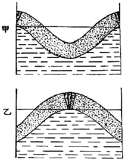
地割れ開閉の説明圖
前に
記したジャマイカ
地震並にリスボン
地震に
於ける
地割れの
開閉は、
北條小學校に
起つたような
現象が
極めて
大規模に
起つたものとすれば
解釋がつくように
思ふ。
果して
然らば、ロアイヤル
港や、
昔ベスンバ
族のゐた
部落は
右の
現象を
起すに
最も
適當な
場所であつて、
此等の
地方は
他の
大地震によつて
再び
同樣の
現象を
起すこともあるであらう。わが
國に
於て
此現象を
未だかつて
大規模に
起したことのないのは、
單に
此現象を
起すに
適當な
構造の
場所が
存在しないのに
因るものであらう。
右の
樣な
次第であるから、
著者の
結論としては、
地割れに
吸込まれるような
現象は、わが
國にては
絶對に
起らないといふことに
歸着するのである。されば
竹藪に
逃げ
込めとか、
戸板を
敷いて
避難せよとかいふ
注意は
餘りに
用心すぎるように
思はれる。
況んや
竹藪自身が
二十間も
移動したことが
明治二十四年濃尾大地震にも
經驗され、
又それを
通して
大きな
地割れの
出來た
實例はいくらもある
位であるから、
左程に
重きを
置かなくとも
差支へない
注意であるように
思ふ。
大地震に
遭遇して
最初の
一分間を
無事［＃ルビの「ぶし」はママ］に
凌ぎ
得たとし、
又餘震や
地割れは
恐れるに
足らないものとの
悟りがついたならば、
其後災害防止について
全力を
盡すことが
出來よう。
此際或は
倒壞家屋の
下敷になつたものもあらうし、
或は
火災を
起しかけてゐる
場所も
多いことであらうし、
救難に
出來るだけ
多くの
人手を
要し、しかもそれには
一刻の
躊躇を
許されないものがある。これ
老幼男女の
區別を
問はず、
一齊に
災害防止に
努力しなければならない
所以である。
下敷になつた
人を
助け
出すことは
震災の
防止上最も
大切なことである。なんとなれば
震災を
被る
對象物中、
人命ほど
貴重なものはないからである。もしそこに
火災を
起す
虞れが
絶對になかつたならば、この
問題の
解決に
一點の
疑問も
起らないであらう。
然しながら、もしそこに
火災を
起す
虞れがあり、
又實際に
小火を
起してゐたならば、
問題は
全然別物である。
大正十四年五月二十三日の
但馬地震に
於て、
震原地に
當れる
田結村に
於ては、
全村八十三戸中八十二戸潰れ、
六十五名の
村民が
潰家の
下敷となつた。この
村は
半農半漁の
小部落であるが、
地震の
當日は
丁度蠶兒掃立の
日に
當り、
暖室用の
炭火を
用ひてゐた
家が
多く、その
中三十六戸からは
煙を
吐き
出し、
遂に
三戸だけは
燃え
上るに
至つた。
一方では
下敷の
下から
助けを
乞ふてわめき、
他方では
消防の
急を
告ぐるさけび、これに
和して
絶え
間なき
餘震の
鳴動と
大地の
動搖とは、
幸に
身を
以て
免れたものには
手の
下しようもなかつたであらう。
然し
村民の
間にはかういふ
非常時に
對する
訓練がよく
行屆いてゐたと
見え、
老幼男女第一に
火災防止に
力め、
時を
移さず
人命救助に
從事したのであつた。
幸に
火も
小火のまゝで
消し
止め、
下敷になつた
六十五名中、
五十八名は
無事に
助け
出されたが、
殘りの
七名は
遺憾ながら
崩壞物の
第一撃によつて
即死したのであつた。もし
村民の
訓練が
不行屆きであり、
或は
火を
消すことを
第二にしたならば、
恐らくは
全村烏有に
歸し、
人命の
損失は
助けられた
五十八名の
中にも
及んだであらう。
即ち
人命の
損失は
實際に
幾倍し、
財産の
損失は
幾十倍にも
及んだであらう。
實にその
村民の
行動は
震災に
對してわれ／＼の
理想とする
所を
實行したものといへる。
聞けばこの
村はかつて
壯丁の
多數が
出漁中に
火を
失して
全村灰燼に
歸したことがあるさうで、これに
鑑みて
其後女子の
消防隊をも
編成し、かゝる
寒村なるに
がそりん・
ぽんぷ一臺備へつけてあるのだといふ。
平日かういふ
訓練があればこそ、かゝる
立派な
行動に
出でることも
出來たのであらう。
また
丹後大地震の
時は、
九歳になる
茂籠傳一郎といふ
山田小學校二年生は
一家八人と
共に
下敷になり、
家族は
屋根を
破つて
逃げ
出したに
拘らず、
傳一郎君は
倒潰家屋内に
踏み
留まり、
危險を
冒して
火を
消し
止めたといひ、
十一歳になる
糸井重幸といふ
島津小學校四年生は、
祖母妹と
共に
下敷になりながら、
二人には
退き
口をあてがつて、
自分だけは
取つて
返し、
二箇所の
火元を
雪を
以て
消しにかゝつたが、
祖母は
家よりも
身體が
大事だといつて
重幸少年を
制したけれども、
少年はこれをきかないで、
幾度も
雪を
運んで
來て、
遂に
消し
止めたといふ。この
爲に
兩少年は
各自の
家屋のみならず、
重幸少年の
如きは
隣接した
小學校と
二十戸の
民家とを
危急から
救ひ
得たのであつた。
實にこれ
等義勇の
行動はそれが
少年によつてなされたゞけに
殊更たのもしく
思はれるではないか。
日本に
於ける
大地震の
統計によれば、
餘り
大きくない
町村に
於て、
潰家十一軒毎に
一名の
死者を
生ずる
割合である。
然るに、もしこれに
火災が
加はると、
人命の
損失は
三倍乃至四倍になるのであるが、これは
下敷になつた
人の
中、
火災さへなければ
無事に
助け
出さるべきものまで
燒死の
不幸を
見るに
至るものが
多數に
生ずるからである。
地震の
災害を
最小限度に
防止せんとするに
當り
主義として
人命救護に
最も
重きを
置くことは
勿論であるが、
唯此主義の
實行手段として、
火災の
防止を
眞先にすることが
必要條件となるのである。もし
此手段の
實行上に
伴ふ
犧牲があるならば、それを
考慮することも
必要であるけれども、
何等の
犧牲がないのみならず、
火災防止といふ
最も
有利な
條件が
伴ふのである。
實際大地震の
損害に
於て、
直接地震動より
來るものは
僅に
其一小部分であつて、
大部分は
火災のために
生ずる
損失であるといへる。
此關係は
關東大地震、
但馬地震、
丹後地震に
於て、
此頃證據立てられた
所であつて、
別段な
説明を
要しない
事實である。
地震に
伴ふ
火災は
大抵地震の
後に
起るから、
其等に
對しては
注意も
行屆き、
小火の
中に
消止める
餘裕もあるけれども、
潰家の
下から
徐々に
燃え
上がるものは、
大事に
至るまで
氣附かれずに
進行することがあり、
終に
大火災を
惹起したことも
少くない。
大正十四年五月二十三日の
但馬地震に
於て、
豐岡町に
於ては、
地震直後、
火は
三箇所から
燃え
上つた。これは
容易に
消し
止められたので、
消防隊又は
一般の
町民の
間には
多少の
緩みも
生じたのであらう。
市街の
中心地に
於ける
潰家の
下に、
大火災となるべき
火種が
培養せられつゝあつたことを
氣附かないでゐたのである。
地震の
起つたのは
當日午前十一時十分頃であり、
郵便局の
隣りの
潰家から
發火したのは
正午を
過ぐる
三十分位だつたといふから、
地震後凡そ
一時間半を
經過してゐる。これが
氣附かれたときは、
一旦集合してゐた
消防隊も
解散した
後であり、
又氣附かれた
後も
倒潰家屋に
途を
塞がれて
火元に
近づくことが
困難であつたなどの
不利益が
種々重なつて、
遂に
全町二千百戸の
中、
其三分の
二を
全燒せしめる
程の
大火災となつたのである。しかも
其燒失區域は
町の
最も
重要な
部分を
占めてゐたので、
損失の
實際の
價値は
更に
重大なものであつたのである。
普通に
出來てゐる
水道鐵管は、
地震によつて
破損し
易い。
啻に
大地震のみならず、
一寸した
強い
地震にもさうである。
特に
地盤の
弱い
市街地に
於てはそれが
著明である。
關東大地震後、この
方面に
於ける
研究も
大いに
進み、
或は
鐵管の
繼手の
改良、
或は
地盤不良な
場所を
避けて
敷設すること、
止むを
得なければ
豫備の
複線を
設けることなど、
幾分耐震的になつた
所もあるけれども、それも
地震の
種類によるのであつて、われ／＼が
謂ふ
所の
大地震に
對しては、
先づ
暫時無能力となるものと
諦めねばなるまい。
今日都市に
於ける
消防施設は
水道を
首位に
置いてあつて、
普通の
火災に
對してはそれで
差支へないのであるが、
大地震のような
非常時に
於ては、
忽ち
支障を
來すこと、
其例が
餘りに
多い。
非常時の
消防施設については
別に
其局に
當る
人があるであらう。
唯われ／＼は
現状に
於て
最善を
盡す
工夫をしなければならぬ。
水なしの
消防は
最も
不利益であるから、
水道の
水が
止まらない
内、
機敏に
貯水の
用意をすることが
賢明な
仕方である。たとひ
四邊に
火災の
虞れがないように
考へられた
場合に
於ても、
遠方の
火元から
延燒して
來ることがあるからである。
著者は
大正十二年の
關東大地震の
際、
東京帝國大學内地震學教室にあつて、
水無しに
消防に
從事した
苦しい
經驗を
有してゐるが、
水の
用意があつての
消防に
比較して
其難易を
説くことは、
蓋し
愚の
骨頂であらう。この
經驗によつて、
水なしの
消防法をも
心得て
置くべきものといふことを
覺つたが、
實際には
水を
使用しては
却つて
能くない
場合もあるので、
著者の
專門外ではあるけれども、
聞き
噛つたことを
略述して
見ることにする。
水を
用ひては
却つて
能くない
場合は
後廻しにして、
先づ
水を
用ひて
差支へない
場合、もしくは
有利な
場合に
於て、
水のあるなしによつて
如何に
之を
處置するかを
述べて
見たい。
個人消防上の
最大要件は
時機を
失ふことなく、
最も
敏速に
處置することにある。これは
火は
小さい
程、
消し
易いといふ
原則に
基づいてゐる。
或は
自力で
十分なこともあり、
或は
他の
助力を
要することもあり、
或は
消防隊を
必要とすることもあるであらう。
水は
燃燒の
元に
注ぐこと、
焔や
煙に
注いでも
何等の
效果がない。
障子のような
建具に
火が
燃えついたならば、この
建具を
倒すこと、
衣類に
火が
燃えついたときは、
床又は
地面に
一轉がりすれば、
焔だけは
消える。
火が
天井まで
燃え
上つたならば、
屋根まで
打拔いて
火氣を
拔くこと。これは
焔が
天井を
這つて
燃え
擴がるのを
防ぐに
效力がある。この
際若し
竿雜巾（
竿の
先に
濕雜巾を
結付けたもの）の
用意があると、
最も
好都合である。
隣家からの
延燒を
防ぐに、
雨戸を
締めることは
幾分の
效力がある。
煙に
卷かれたら、
地面に
這ふこと、
濕れ
手拭にて
鼻口を
被ふこと。
焔の
下をくゞるときは、
手拭にて
頭部を
被ふこと。
手拭が
濕れてゐれば
猶よく、
座蒲團を
水に
浸したものは
更によし。
火に
接近するに
疊の
楯は
有效である。
水を
用ひては
却つて
能くない
場合は、
燃燒物が
油、
あるこーるの
如きものゝ
場合である。
藥品の
中には
容器の
顛倒によつて
單獨に
發火するものもあれば、
接觸混合によつて
發火するものもある。それに
あるこーる、
えーてる等の
如く
一時に
燃え
擴がるものが
近くにあるとき、
直に
大事を
惹起すに
至ることが
多い。
或は
飮食店に
於ける
揚物の
油、
或は
せるろいど工場など、
世の
文化が
進むに
從ひ、
化學藥品にして
發火の
原因となるものが、
益殖えて
來る。
關東大地震のとき、
東京に
於ける
大火災の
火元は
百五十箇所程に
數へられてゐるが、
其中化學藥品に
由るものは
四十四箇所であつて、
三十一箇所は
都合よく
消し
止められたけれども、
十三箇所だけは
大事を
惹起すに
至つた。
化學藥品油類の
發火に
對しては、
燃燒［＃ルビの「せんしよう」はママ］を
妨げる
藥品を
以て、
處理する
方法もあるけれども、
普通の
場合には
砂でよろしい。もし
蒲團、
茣蓙が
手近にあつたならば、それを
以て
被ふことも
一法である。
揚物の
油が
鍋の
中にて
發火した
場合は、
手近にある
うどん粉、
菜葉などを
鍋に
投げ
込むこと。
火に
慣れないものは
火を
恐れるために、
小火の
中にこれを
押へ
付けることが
出來ずして
大事に
至らしめることが
多い。もし
右のような
火の
性質を
心得てゐると、
心の
落着も
出來るため、
危急の
場合、
機宜に
適する
處置も
出來るようにもなるものである。
左に
記したものゝ
中には
實驗を
行ひ
得るものもあるから、
教師父兄指導の
下に、
安全な
場所を
選びて、これを
試みることは
極めて
有益なことである。
ついでに
記して
置くことは、
火災の
避け
難き
場合を
顧慮しての
心得である。
金庫の
足の
車止めを
確かにして
置くこと。
地震のとき
金庫が
動き
出し、
扉がしまらなくなつた
例が
多い。
金庫、
書庫、
土藏には
各の
大きさに
相應する
器物（
例へば
土藏ならば
ばけつ）に
水を
入れ
置くこと。これは
内部の
貴重品の
蒸燒になるのを
防ぐためである。
土藏内の
品物は
壁から
一尺以上離し
置くこと。
貴重品を
一時井戸に
沈めることあり。
地中に
埋める
場合は
砂の
厚さ
五分程にても
有效である。
火災の
避難に
於ては
旋風に
襲はれさうな
場處を
避けること。
大火災のときは、
地震とは
無關係に、
旋風が
起り
勝ちである。
火先が
凹の
正面を
以て
前進するとき、
其曲り
角には
塵旋風と
名づくべきものが
起る。
又川筋に
接した
廣場は
移動旋風によつて
襲はれ
易い。
明暦大火の
際、
濱町河岸の
本願寺境内に
於て、
又關東大地震東京大火災の
際、
本所被服廠跡に
於て、
旋風のために、
死人の
集團が
出來たことはよく
知られた
悲慘事であつた。
昔の
人の
恐れてゐた
大地震の
搖り
戻しは、
最初の
大地震の
主要部の
意味であつて、
今日の
所謂餘震を
指すものでないことは
前に
辯じた
通りである。
然るに
後世の
人、これを
餘震と
混同し、
隨つて
餘震までも
恐怖するに
至つたのは
災害防止上遺憾の
次第であつた。
餘震を
恐怖せるため、
消防に
十分の
實力を
發揮することが
出來なかつたとは、
屡專門の
消防手から
聞く
述懷であるが、
著者は
此種の
人士が
餘震を
誤解してゐるのを、
最も
遺憾に
思ふものである。
統計によれば、
餘震のときの
震動の
大いさは、
最初の
大地震のものに
比較して、
其三分の
一といふ
程のものが、
最大の
記録である。
隨つて
破壞力からいへば、
餘震の
最大なるものも
最初の
大地震の
九分の
一以下であるといふことになる。ざつと
十分の
一と
見てよいであらう。
其故に、
單に
統計の
上から
考へても、
餘震は
恐れる
程のものでないことが
了解せられるであらう。
唯大地震直後はそれが
頗る
頻々に
起り、しかも
間々膽を
冷す
程のものも
來るから、
氣味惡くないとはいひ
難いことであるけれども。
大地震後、
餘震を
餘りに
恐怖するため、
安全な
家屋を
見捨てゝ、
幾日も／＼
野宿することは、
震災地に
於ける
一般の
状態である。もし
其野宿が
何かの
練習として
效能が
認められてのことならば、それも
結構であるけれども、
病人までも
其仲間に
入れるか、
又は
病氣を
惹き
起してまでもこれを
施行するに
於ては、
愚の
骨頂といはなければならぬ。
大地震によりて
損傷した
家屋の
中には
崩壞の
縁に
近寄り、きはどい
所で
喰止めたものもあらう。さういふものは、
地震ならずとも、
或は
風、
或は
雨によつて
崩壞することもあるであらう。
又洋風建築物にては
墜落しかけた
材料も
能く
氣附かれる。さういふ
建築物には
近寄らぬをよしとしても、
普通の
木造家屋特に
平屋建にあつては、
屋根瓦や
土壁を
落し、
或は
少し
許りの
傾斜をなしても、
餘震に
對しては
安全と
見做して
差支へないものと
認める。
實に
木造家屋が
單に
屋根瓦と
土壁とを
取除かれただけならば、これあるときに
比較して
耐震價値を
増したといへる。
何となれば、これ
等の
材料は
家屋各部の
結束に
無能力なるが
上に、
地震のとき、
自分の
惰性を
以て
家屋が
地面と
一緒に
動くことに
反對するからである。
又家屋の
少し
許りの
傾斜は、
其耐震價値を
傷つけてゐない
場合が
多い。
一體家屋が
新しい
間は
柱と
横木との
間を
締めつけてゐる
楔が
能く
利いてゐるけれども、それが
段々古くなつて
來ると、
次第に
緩みが
出て
來る。これは
木材が
乾燥するのと、
表面から
次第に
腐蝕して
來るとに
由るのである。それで
大地震に
出會つて
容易に
幾らかの
傾斜をなしても、それがために
楔が
始めて
利き
出して
來ることになり、
其位置に
［＃「ことになり、其位置に」は底本では「ことになり。其位置に」］於て
構造物の
一層傾かんとするのに
頑強に
抵抗するにあるのである。
恰も
相撲のとき、
土俵の
中央からずる／＼と
押された
力士が、
劍の
峯に
蹈み
耐へる
場合のようである。かうして
［＃「かうして」は底本では「かしうて」］最初の
大地震に
蹈み
耐へる
家屋が、
其後、
三分の
一以下の
地震力によつて
押し
切られることはないはずである。
著者は
關東大地震の
調査日記に
於て、
大地震後家族と
共に
自宅に
安眠し、
一回も
野宿しなかつたことを
記した。
又但馬大地震の
調査日記には、
震原地の
殆んど
直上たる
瀬戸の
港西小學校に
一泊したことを
記した。
此校舍は
木造二階建であつたが、
地震のために
中央部が
階下まで
崩壞し、
可憐な
兒童を
二名程壓殺したのであつた。
然し
家屋の
兩翼は
少しく
傾きながら、
潰れずに
殘つてゐたので、これを
檢査して
見ると、
餘震には
安全であらうと
想像されたから、
山崎博士を
初め
一行四人は
其家の
樓上に
一泊した。
其夜大雨が
降り
出したので、これ
迄野營を
續けてゐた
附近の
被害民は、
皆此の
潰れ
殘りの
家に
集まつて
來て
餘り
大勢でありし
爲、
混雜はしたけれども、
皆口々に、
安らかな
一夜を
過ごしたことを
談り
合つてゐた。
昭和二年十月、プラーグに
於ける
地震學科の
國際會議へ
出席した
歸り
途、
大活動に
瀕せるヴエスヴイオを
訪ひナポリから
郵船筥崎丸に
便乘し、
十三日アデン
沖を
通過する
頃本稿を
記し、
同じく
二十九日安南沖を
過ぐる
頃、
稿終る。
著者 誌す
●表記について
- このファイルは W3C 勧告 XHTML1.1 にそった形式で作成されています。
- ［＃…］は、入力者による注を表す記号です。